Bahía 01
Cristales
Parabrisas y vidrios para que quede sellado, seguro y listo para el camino.
Seguin, Texas · Familiar desde el 2000
Choques, hojalatería y pintura, enderezado sin pintura y cristales — lo que dice el letrero del taller es el trabajo de todos los días.
El taller de East Court
Auto Worx es familiar en Seguin desde el 2000. Si está en el edificio — cristales, PDR, seguros, choques — eso es lo que hacemos. Llama con el carro y lo que pasó. Español o inglés.
Servicios
Cuatro puertas. Cuatro trabajos. Más la hojalatería y pintura que lo deja como si no hubiera pasado.
Bahía 01
Parabrisas y vidrios para que quede sellado, seguro y listo para el camino.
Bahía 02
Golpes de puerta y muchas abolladuras — con cuidado — cuando el PDR es lo correcto.
Bahía 03
Aceptamos reclamaciones. Llama y te orientamos en los siguientes pasos.
Bahía 04
Daño por impacto: paneles, estructura y acabado para que se vea y se maneje bien.
Prueba del trabajo
Carros reales del taller — choques, hojalatería y pintura.
Desliza ← →
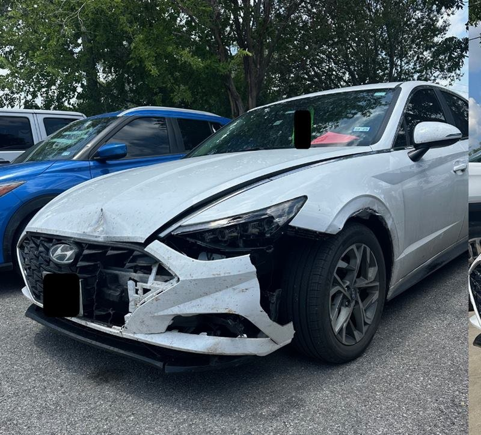
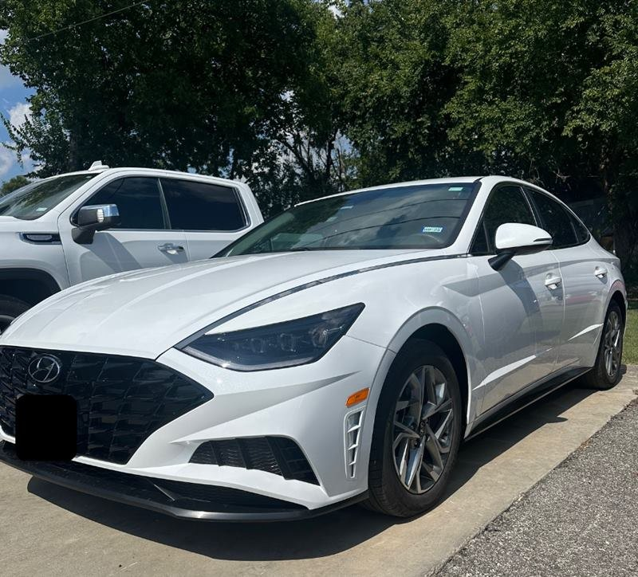
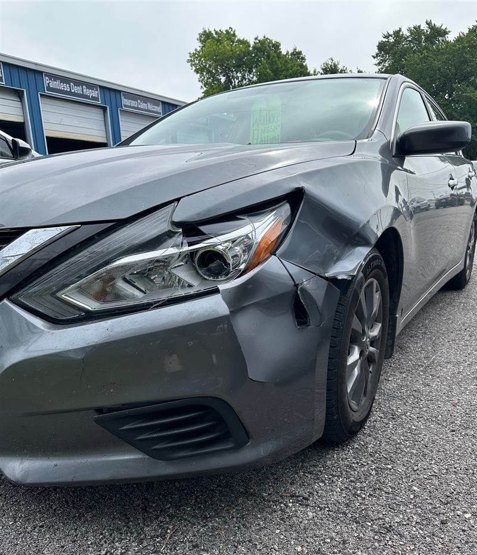
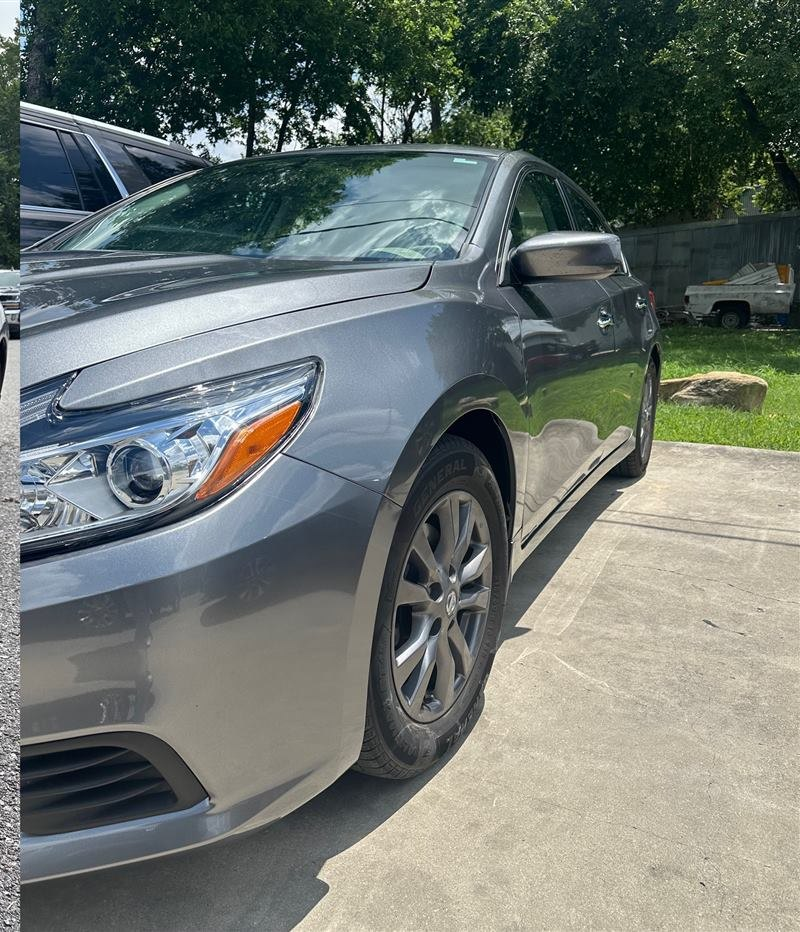
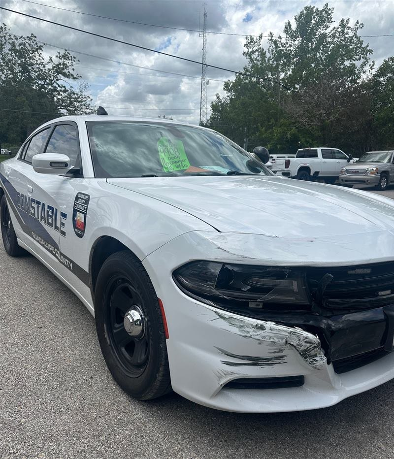
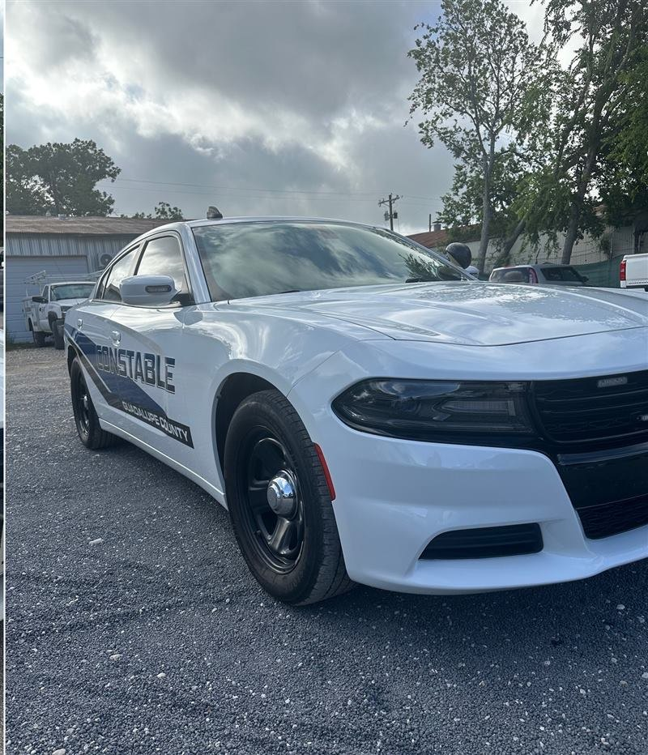
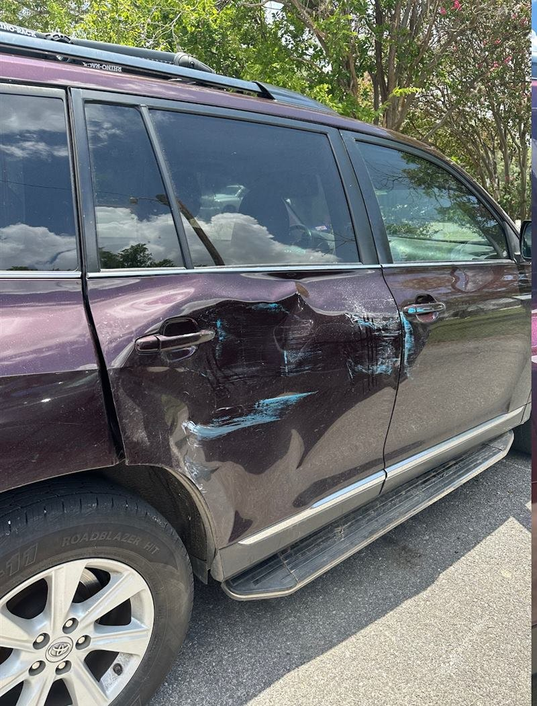
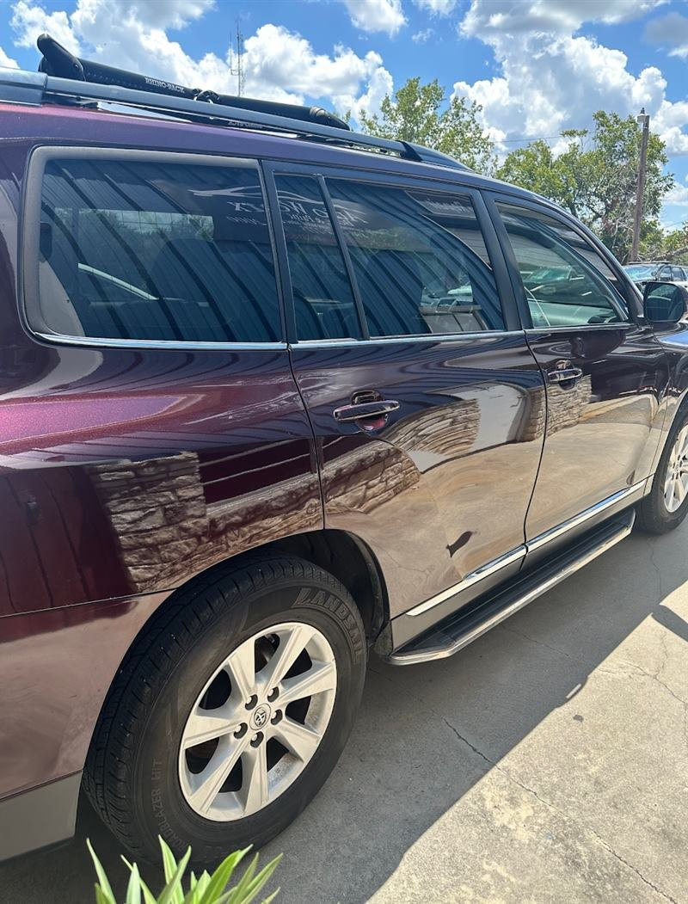
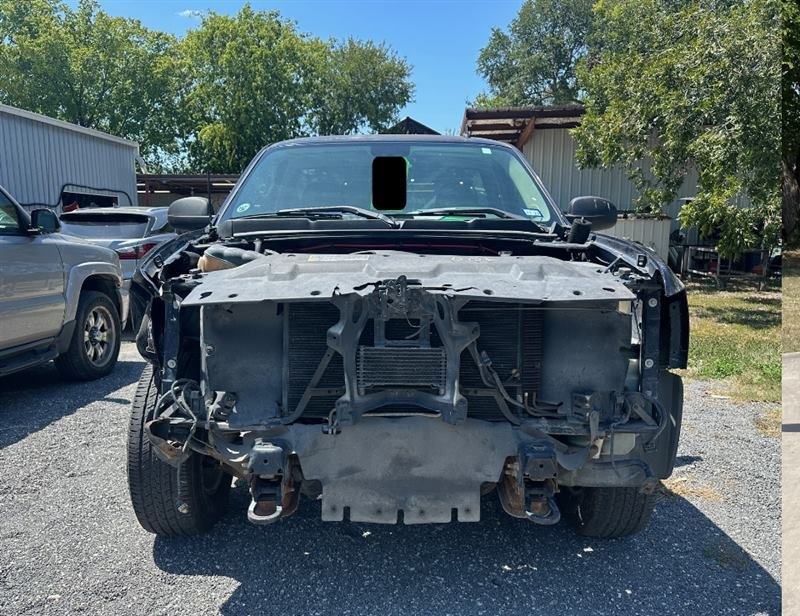
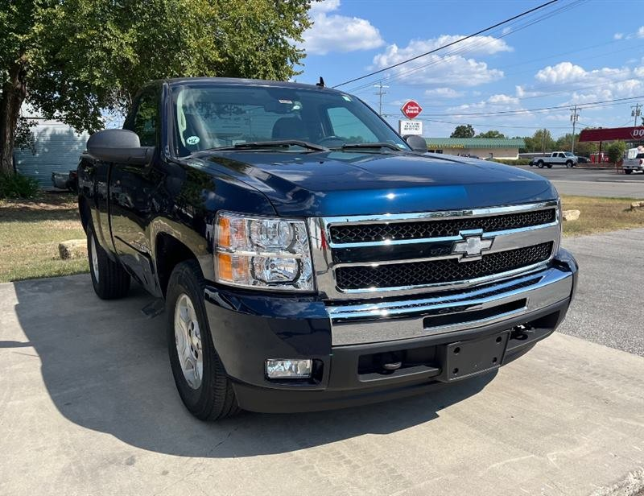
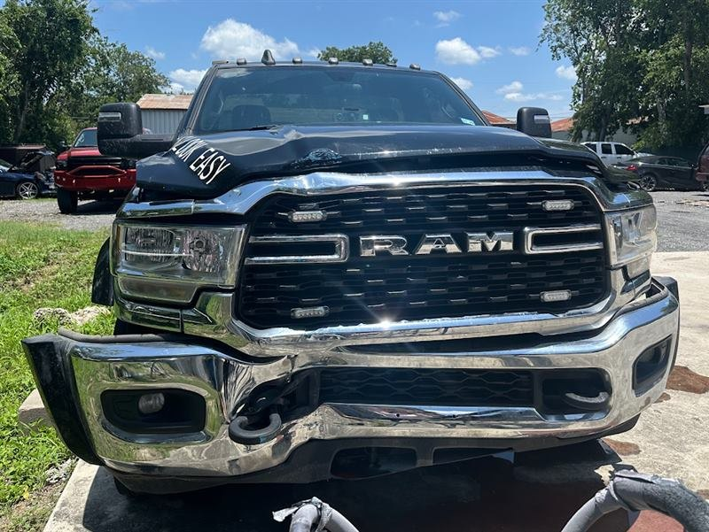
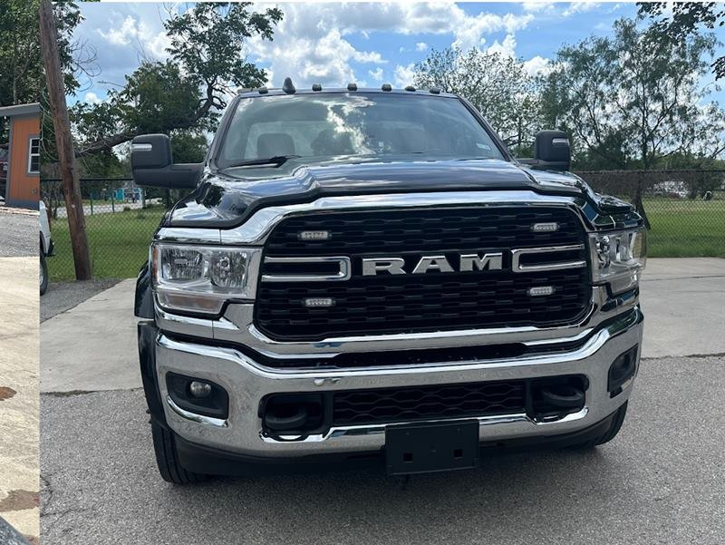
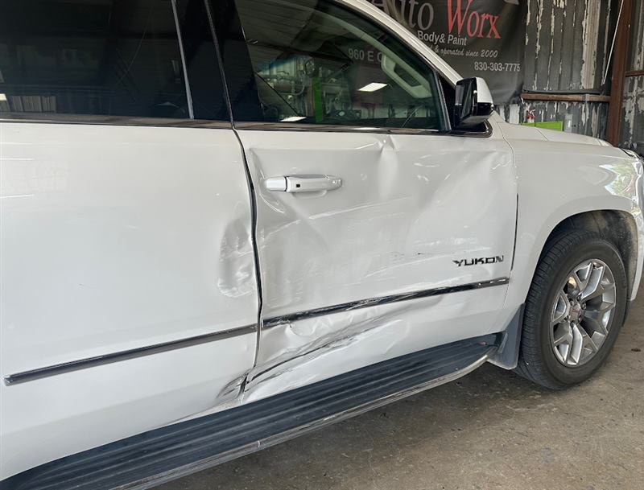
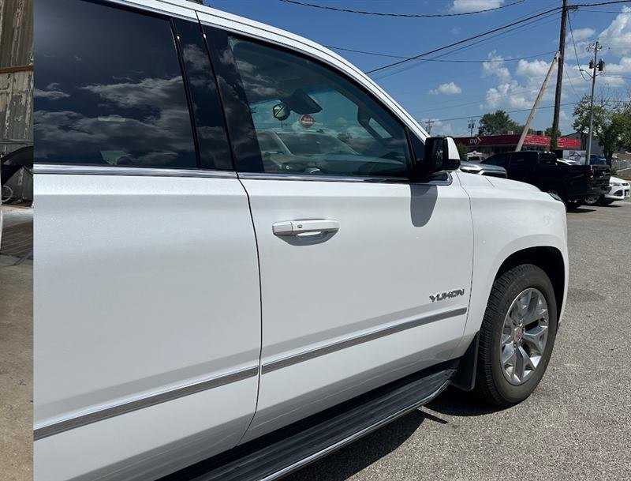
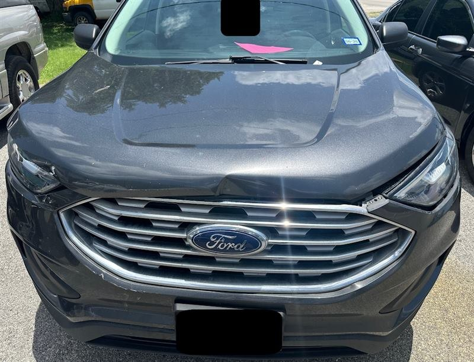
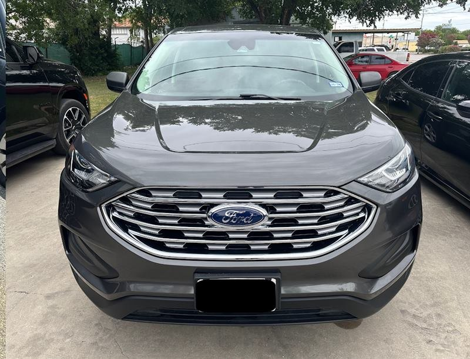
Cómo funciona
Sin formularios eternos. Dinos el carro y el daño.
01
Llama al taller830-303-7775. Español o inglés. Las fotos del daño ayudan.
02
Lo revisamosChoque, abolladura, cristal o pintura — te decimos qué necesita.
03
Seguro, si lo tienesAceptamos reclamaciones. Te orientamos en los siguientes pasos.
04
Reparación y entregaHojalatería, pintura, PDR o cristales — y te llevas el carro.
Aceptamos seguros
La puerta de en medio lo dice porque es cierto. Trae la reclamación. Llama primero para saber qué estamos viendo.
Llamar por un reclamoLlama con fotos del daño. Aceptamos seguros.
830-303-7775Contacto
Te atendemos en español o en inglés — llama o escribe al taller.
Preguntas
Sí. Aceptamos reclamaciones — está en la puerta de la bahía. Llama al 830-303-7775 y te orientamos.
Choques, hojalatería y pintura, enderezado sin pintura (PDR) y cristales. La misma lista del letrero.
Sí. Español o inglés — el mismo número.
960 E Court, Seguin, TX 78155. Familiar aquí desde el 2000.
Llama al 830-303-7775 con el carro y lo que pasó. Las fotos ayudan. También puedes escribir a autoworxinfo@gmail.com.